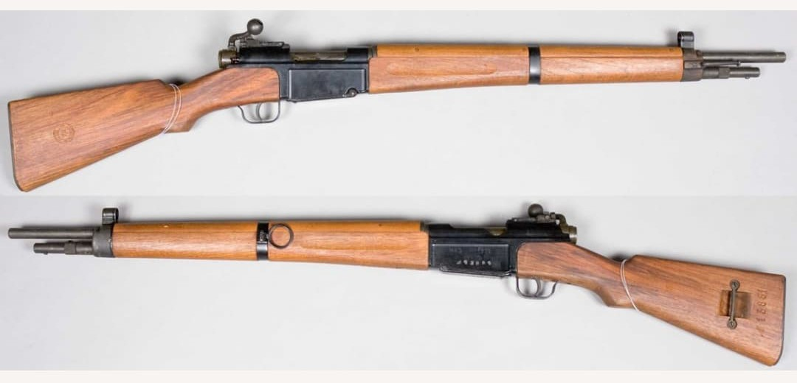

Les armes françaises de la Seconde Guerre mondiale représentent un ensemble varié de modèles issus de plusieurs décennies d’évolution. Entre modernisation rapide, héritage de la Grande Guerre et innovations techniques, l’armement français de 1915 à 1945 reflète une période complexe où coexistent équipements anciens et armes de conception récente.
Cette section du Musée HOP WW2 présente l’ensemble des armes blanches, fusils, pistolets, fusils-mitrailleurs, mitrailleuses et armes d’appui utilisées par les forces françaises durant le conflit. Chaque fiche offre une description détaillée, des photographies, et les éléments permettant d’identifier un modèle authentique.
Adopté en 1936, le MAS‑36 est le fusil réglementaire moderne de l’armée française au début de la Seconde Guerre mondiale. Conçu pour remplacer les fusils Lebel et Berthier, il se distingue par sa robustesse, sa simplicité mécanique et sa baïonnette cruciforme intégrée dans le fût.
Bien que la production soit encore limitée en 1939–1940, le MAS‑36 équipe de nombreuses unités d’infanterie, de chasseurs, de troupes coloniales et d’unités motorisées.

Le MAS‑36 entre en service juste avant la guerre. Il est utilisé durant la campagne de France en 1940, puis par les Forces Françaises Libres et les troupes d’Afrique du Nord. Sa conception moderne en fait une arme fiable, appréciée pour sa maniabilité et sa solidité.
Après la Seconde Guerre mondiale, il continue sa carrière en Indochine, en Algérie et dans l’armée française jusqu’aux années 1960.